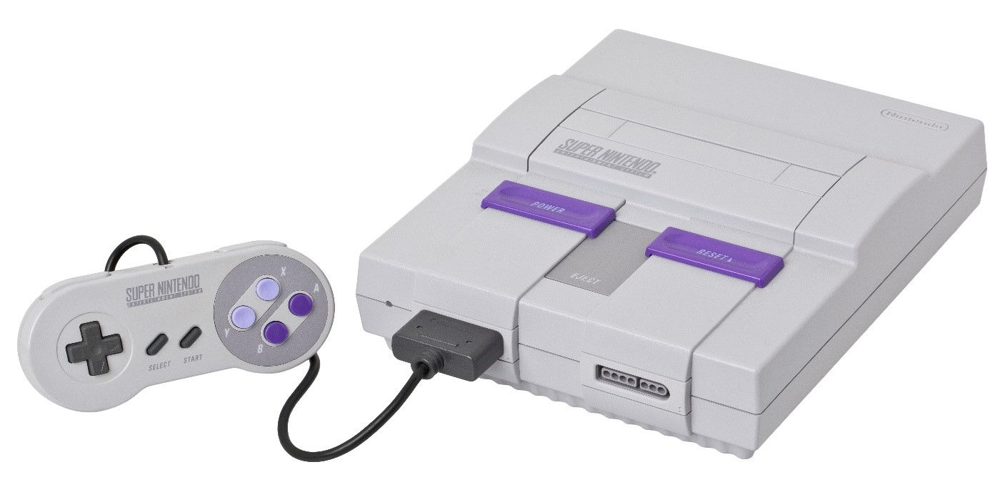

Joy-Con Controllers
Detachable controllers for handheld mode or local multiplayer gaming.
| Console | Image | Release Year | Type | CPU | Storage | Display | Backward Compatibility | Notable Features |
|---|---|---|---|---|---|---|---|---|
| Nintendo Entertainment System (NES) |  |
1983 (JP), 1985 (NA) | Home | Ricoh 8-bit | Cartridge | N/A | No | Classic 8-bit gaming |
| Super Nintendo Entertainment System (SNES) |  | 1990 (JP), 1991 (NA) | Home | Ricoh 16-bit | Cartridge | N/A | No | 16-bit graphics, Mode 7 effects |
| Nintendo 64 (N64) |  |
1996 | Home | 64-bit NEC VR4300 | Cartridge | N/A | No | First 3D Nintendo console, analog stick |
| GameCube |  |
2001 | Home | IBM PowerPC Gekko | Mini DVD | N/A | No | Compact disc-based console |
| Wii |  |
2006 | Home | IBM PowerPC Broadway | 512MB flash | N/A | Yes (GameCube) | Motion controls, Wii Remote |
| Wii U |  |
2012 | Home | IBM PowerPC Espresso | 8GB/32GB | 6.2" 854×480 | Yes (Wii) | GamePad controller, dual-screen gameplay |
| Nintendo Switch |  |
2017 | Hybrid | NVIDIA Tegra X1 | 32GB (expandable) | 6.2" 1280×720 | No | Hybrid console (dockable and handheld) |
| Nintendo Switch Lite |  |
2019 | Handheld | NVIDIA Tegra X1 | 32GB (expandable) | 5.5" 1280×720 | No | |
| Nintendo Switch OLED | 2021 | Hybrid | NVIDIA Tegra X1 | 32GB (expandable) | 7" OLED 1280×720 | No |
| Console | Image | Release Year | Type | CPU | Storage | Display | Backward Compatibility | Notable Features |
|---|---|---|---|---|---|---|---|---|
| Game Boy | 1989 | Handheld | 8-bit Sharp LR35902 | Cartridge | Monochrome 160×144 | No | First Nintendo handheld | |
| Game Boy Color |  |
1998 | Handheld | 8-bit Sharp LR35902 | Cartridge | Color 160×144 | Yes (Game Boy) | Color screen |
| Game Boy Advance (GBA) |  |
2001 | Handheld | 32-bit ARM7TDMI | Cartridge | 240×160 | Yes (GB, GBC) | More powerful 2D games |
| Nintendo DS | 2004 | Handheld | 67MHz ARM9 + 33MHz ARM7 | Cartridge | Dual 256×192 screens | Yes (GBA) | Dual screens, touchscreen | |
| Nintendo DS Lite | 2006 | Handheld | 67MHz ARM9 + 33MHz ARM7 | Cartridge | Dual 256×192 screens | Yes (GBA) | Slimmer DS redesign | |
| Nintendo DSi | 2008 | Handheld | 133MHz ARM9 + 33MHz ARM7 | Cartridge | Dual 256×192 screens | No | Digital store, cameras | |
| Nintendo 3DS | 2011 | Handheld | Dual-Core ARM11 | Cartridge | 3D 400×240 (top), 320×240 (bottom) | Yes (DS) | Glasses-free 3D display | |
| Nintendo 3DS XL | 2012 | Handheld | Dual-Core ARM11 | Cartridge | 4.88" 3D 400×240 (top), 320×240 (bottom) | Yes (DS) | Larger screen | |
| New Nintendo 3DS |  |
2014 | Handheld | Quad-Core ARM11 | Cartridge | 3D 400×240 (top), 320×240 (bottom) | Yes (DS) | Faster CPU, extra buttons |
| Nintendo 2DS | 2013 | Handheld | Dual-Core ARM11 | Cartridge | 400×240 (top), 320×240 (bottom) | Yes (DS) | No 3D effect, budget-friendly |

Detachable controllers for handheld mode or local multiplayer gaming.

A more traditional controller for those who prefer a classic gaming experience.

To connect the Switch to your TV for full-screen gaming.

Allows you to charge Joy-Con controllers while playing.

A fitness accessory that turns exercise into a fun game.

DIY virtual reality experience with cardboard creations.